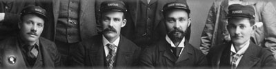
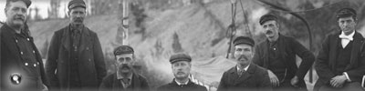
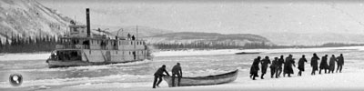
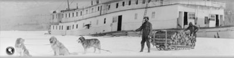

Sternwheelers became a vital part of Yukon transportation. Yukon River sternwheelers were designed to carry heavy cargoes downstream on a light draft and make the return trip upstream with lighter loads.
Pilots and captains had to be highly skilled to navigate their vessels through the rocks, rapids and other hazards of the river.
Unlike the much wider sidewheelers found in the southern United States, the upper river sternwheelers could navigate the narrow rivers of the Yukon. The wheel also helped in negotiating narrow channels, sharp turns and swift currents. Their relatively flat hulls allowed them to operate in shallow water, and they could berth almost anywhere along the river without a dock or wharf.
“Steamboating under difficulties”
Sternwheeler captains had to contend with a range of hazards, including shifting channels, bars, reefs and shallow water.

Burning Wood
Almost all upper river steamboats burned wood. Travelling upstream, a sternwheeler burned one and a half to two cords per hour. On a downstream trip boats used only a small amount of wood for steering or reversing.
Vessels usually made two stops travelling downriver and five to seven going upriver. Wood camps were scattered along the length of the river every 50 or 100 miles. Boats usually took on 10-20 cords at a time; loading the wood took about an hour.

S.S. Yukoner makes its way upstream though Five Finger Rapids.
Yukon Archives, MacBride Museum collection, #4062

The skipper at the wheel of the S.S. Casca.
Yukon Archives, J.P. Kingscote fonds, 84/32 #15

S.S. Mary F. Graff and S.S. Sybil, n.d.
Yukon Archives, E.J. Hamacher fonds (Margaret and Rolf Hougen collection), 2002/118 #20
Studio portrait, taken October 10, 1900, of the crew of the S.S. Yukoner.
Yukon Archives, MacBride Museum collection, #4016

Batchelor, Bruce. Yukon Channel Charts, p.30.
Yukon Archives, PAM 1996-566
Officers and crew of the S.S. Bailey, circa August 1899.
Yukon Archives, H.C. Barley fonds, #5194
(Photo at left) Miller’s wood camp, on the Stewart River. Deck hands used hand trucks, which held approximately one third of a cord, to load wood.
Yukon Archives, GSC photo library collection, 90/36 #84638

The North American Trading and Transportation Company’s S.S. John C. Barr at Hootalinqua, circa 1899.
Yukon Archives, Eric Hegg fonds, #2689
S.S. Vidette, owned by the Side Streams Navigation Company, got stuck in ice in the fall on the Yukon River near the Indian River. The passengers had to walk 35 miles back to Dawson and the Vidette stayed where it was all winter.
Yukon Archives, A.K. Schellinger fonds, #5919
Hauling wood from the wreck of the S.S. Dawson. The Dawson sank in Rink Rapids in the fall of 1926.
Yukon Archives, Back and Bee family fonds, 90/19 #171

S.S. Columbian, shown here loading wood on a Sunday School excursion to Lake Laberge, July 17, 1906. Two months later, the Columbian was destroyed when a stray gunshot ignited its cargo of explosives. The resulting fire killed six crew members.
Yukon Archives, E.J. Hamacher fonds (Margaret and Rolf Hougen collection), 2002/118 #94

S.S. Klondike I sunk below Hootalinqua in 1937. Built in 1929 to reduce the need for barges, it was the largest sternwheeler on the upper river, at 210 feet.
Yukon Archives, Claude Tidd fonds, #8502